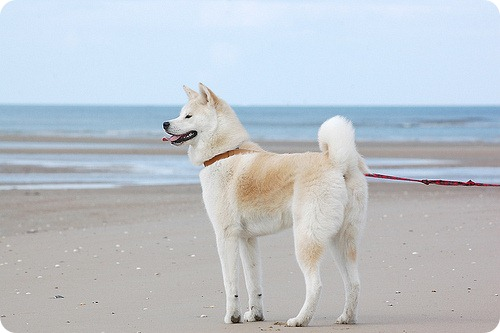
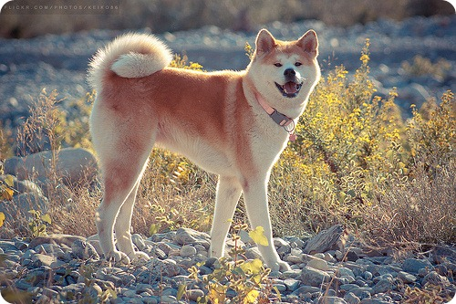
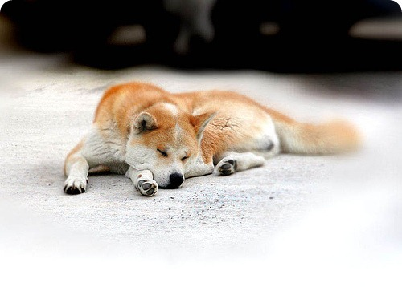

Японія давно стала для нас найбільшим постачальником різного роду екзотики. Незвична їжа, мода, високотехнологічна електроніка — дивно, як швидко все це стає частиною європейської культури. Так і собака акіта іну, що носить статус національного надбання Японії, потрапивши до Європи та Америки, швидко завоювала там шанувальників. Причому, в даному випадку, ця популярність була викликана аж ніяк не екзотичністю тварини, а навпаки — його повною відповідністю європейським традиціям краси.
Акіта іну — собака класичних форм, але, разом з тим, її вигляд дуже оригінальний. Велика широколоба голова, масивні лапи і незвичайної форми вушка — кишеньки роблять Акиту схожою одночасно на вовка, лисицю і ведмедя. В цілому, це гармонійно складена, міцна собака великого розміру. Вражаюче, але вся краса акити створена виключно силами природи, практично без участі людини.
Вважається, що предком акити була собака матагііну, яка водилася в 8 столітті в горах Одате і застосовувалася в полюванні на ведмедя і кабана. «Матагііну» буквально перекладається з японської як «шановний мисливець».
Безпосередньо порода акіта іну почала розвиватися в 18 столітті, в період Едо. Свою назву «Akita Inu» собака отримала від префектури Акіта, яку вважають її батьківщиною. Нова порода дуже сподобалася японської знаті і отримала особливий статус при імператорському дворі. Ніхто, крім верхівки влади не мав права тримати вдома цю собаку, фактично прирівнюється до божества. Суворо каралися ті, хто ризикнув образити і, тим більше, вбити Акиту. До кожної собаці був приставлений особистий слуга, який повинен був не тільки доглядати за нею, але й надавати їй усілякі почесті.
У Японії донині акіта іну вважається символом благополуччя і удачі. Статуетки акити є традиційним подарунком батькам новонародженого, а також часто даруються хворим з побажанням швидкого одужання. Ймовірно, що живий щеня акити, з’явившись у вашій родині, здатний творити справжні чудеса.
Напевно, ви вже зрозуміли, що акіта іну — це зовсім особлива собака. Японці сміливо довіряють їй дітей, для них вона здатна стати прекрасною нянькою. Взагалі, ця собака дуже прив’язана до своєї сім’ї і навіть до друзів родини. А високий інтелект, мужність і дисциплінованість роблять з неї того самого істинного воїна Сходу, врівноваженого, терплячого, але завжди готового вступити в бій, якщо тим, ким він дорожить, потрібен захист.
Про вірність собаки породи акіта іну ходять легенди. Так весь світ обійшла трагічна історія собаки по кличці Хачико, яка не в силах повірити у смерть улюбленого господаря, протягом 10 років приходила зустрічати його на залізничній платформі. Цьому собаці був встановлений пам’ятник, що став символом безмежної вірності і любові, а також місцем зустрічей закоханих.
Види, стандарти і різновиди
Під час Другої світової війни на службі використовувалися в основному німецькі вівчарки. Власники АКІТ стали в’язати своїх вихованців з «німцями». Таким чином, після закінчення війни порода акіта іну розділилася на три різновиди: акіта матагі, бійцівський акіта, вівчарка — акіта або американська акіта (акіта матагі, схрещена з німецькою вівчаркою).
Вибір цуценя акити іну
Не варто купувати цуценя акити іну на пташиному ринку. Перед покупкою цуценя необхідно, по можливості, «познайомитися» з батьками та вивчити їх документи. Найкраще звернутися в клуб породи. При виборі заводчика майте на увазі, що існує багато клубів, що не визнаних Міжнародної Кінологічної Організацією, які не гарантують високопорідний собак.
Не найкращим вибором буде щеня з численного посліду. Чи не хапайте найбільшого цуценя — великий, зовсім не означає, що кращий. Відмінний варіант — цуценя з рівного посліду, в якому брати і сестрички не сильно відрізняються один від одного за розмірами.
Здорове цуценя в міру вгодований, має блискучу шерсть. Він веселий, життєрадісний і допитливий, твердо стоїть на ногах і впевнений в рухах. Щеня зі здоровою психікою не повинен боятися різких гучних звуків або бути надмірно агресивним. Зверніть увагу на прикус, пігментацію носа і пасти, колір очей. У псів обидва яєчка повинні бути опущені в мошонку.
Якщо ви купуєте цуценя акити іну тільки в якості домашнього вихованця, керуйтеся цими критеріями і покладайтеся на свою інтуїцію. До вибору собаки для участі у виставках або племінному розведенні краще залучити фахівця — кінолога, який допоможе вам визначити майбутнього чемпіона.
Особливості утримання, догляд, здоров’я
Догляд за собакою породи акіта іну досить простий. Собака відмінно пристосована для утримання як на вулиці, так і в квартирі. Однак, «квартирним» Акіта необхідно гуляти як мінімум 2 рази на день. На прогулянці дорослі акити поводяться неактивно — вони спокійно крокують поруч із господарем, однак, не відмовляться пограти або позадирали з родичами.
Шерсть досить вичісувати раз на тиждень. У період линьки, щоб допомогти собаці позбутися від старої вовни, розчісуйте вихованця 2-3 рази на тиждень. Купати собаку потрібно якомога рідше, лише кілька разів на рік. Для миття використовуйте тільки спеціальні шампуні для собак.
Оптимальне харчування для акити іну — добре підібраний сухий корм. Він містить всі необхідні вихованцеві вітаміни і мінерали. Забезпечте тварині постійний доступ до чистої і свіжої воді. Під час линьки рекомендується додавати в раціон собаки харчові добавки, які роблять позитивний вплив на стан вовни.
На дресирування і виховання акити іну потрібно багато часу і терпіння. У силу свого свавільного і гордовитого характеру акити не здатні блискавично виконувати команди, звідси їх якась повільність. Однак, самої грубою помилкою буде застосування фізичної сили або крику для досягнення результату. Один раз накричавши на собаку або вдаривши її, ви ризикуєте нажити собі ворога, який при першому зручному випадку вам обов’язково помститься.
Важливо пам’ятати про бійцівський минулому собак породи акіта іну. Поведінка вихованця може стати непередбачуваним, якщо ви вчасно не закладіть основи правильної поведінки. Займаючись вихованням собаки з дитинства, правильно себе позиціонуючи, ви уникнете багатьох проблем у майбутньому. Акіта іну дуже слухняна і ніколи не піде проти волі свого господаря, але тільки якщо буде визнавати його «ватажком».
Акіта іну войовничо відносяться до інших тварин. Тому необхідно з дитинства займатися соціалізацією вихованця. Найчастіше виводите його «в люди», знайомте з іншими тваринами.
Зайвої ніжності акити іну не сприймають. Незважаючи на любов до дітей, на потягнув за хвіст або лапи дитини, собака може відреагувати агресивно. Собаки цієї породи строго охороняють ввірену їм територію, є відмінними сторожами та охоронцями. Вони майже ніколи не гавкають, а просто мовчки нападають на супротивника, що порушив кордони володінь. За своєю природою акіта іну — хижак, тому не варто зайвий раз будити в собаці агресію. Не допускайте бійок з іншими собаками, які не нацьковуйте вихованця.
Особливості в’язки акити іну
Акіта іну — одна з найбільш «чистопородних» собак. Ця японська порода ніколи не мала і не потребуватиме поліпшенні характеристик і припливі нових «кровей». Племінне розведення собак цієї породи в будь-якій країні світу строго контролюється Японією.
Розплідники і клуби
Собаки цієї унікальної породи вважаються національним надбанням Японії і знаходиться під патронажем уряду з початку 20 століття. Японці ретельно відстежують процеси розведення акити іну і не віддають собак в неперевірені розплідники. Будь акіта іну, офіційно вивезена з Японії, знаходиться під суворим контролем Японського національного клубу породи, який відстежує виставкову кар’єру і умови утримання тварини. Придбати високопорідний собаку через Японський національний клуб, можна лише відмінно зарекомендував себе як заводчик даної породи, що займається розведенням не менше 10 років.
У Росії більшою популярністю користується такий різновид породи, як американська акіта, розплідники якої можна знайти в Москві, Петербурзі та деяких інших великих містах.
Історія Хатіко
Найвідомішою собакою породи акіта- іну став, звичайно, пес по кличці Хатіко. Цей люблячий вихованець вразив весь світ своєю непохитною вірністю і відданістю. З’явившись в сім’ї японського фермера Хідесабуро Уено восьмим за рахунком, він став найближчим другом для свого власника. Кожен день Хати проводжав господаря на роботу до станції вокзалу, а до вечора вдавався зустрічати його в певний час.
Коли Хати виповнилося півтора року, Хідесабуро помер від серцевого нападу прямо на роботі. Того вечора Хатіко як завжди прийшов зустрічати його на вокзал, але так і не дочекався. Однак, не вірячи в розлуку, собака приходила щодня на місце зустрічі і чекала свого господаря до кінця своїх днів. Незабаром вся країна дізналася про відданість Хатіко, про нього писали газети, розповідали по телебаченню і говорили в народі. Пізніше Хатіко поставили пам’ятник прямо в тому місці, де він щодня чекав свого господаря. Помер пес в тому ж місці з надією в серці.
Про події життя Хати було знято кілька фільмів. Найзнаменитішим, з яких стала картина «Хатіко — найвірніший друг» з Річардом Гіром у головній ролі. Після цього фільму багато задавалися питанням, якої породи собака Хатіко, бажаючи придбати такого ж вірного друга. Більш того, багато хто вважав, що хатико і порода собаки акіта іну — це синоніми. Завдяки своїй вірності, Хатіко — стало прозивним ім’ям, а порода акіта- іну — придбала неймовірну популярність по всьому світу.